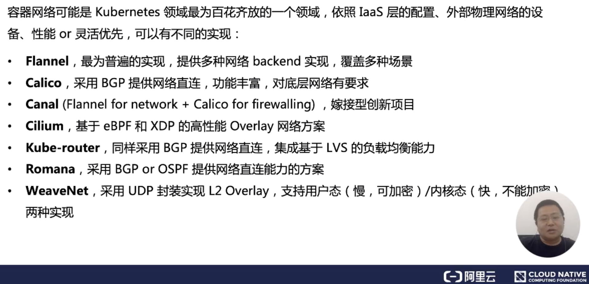
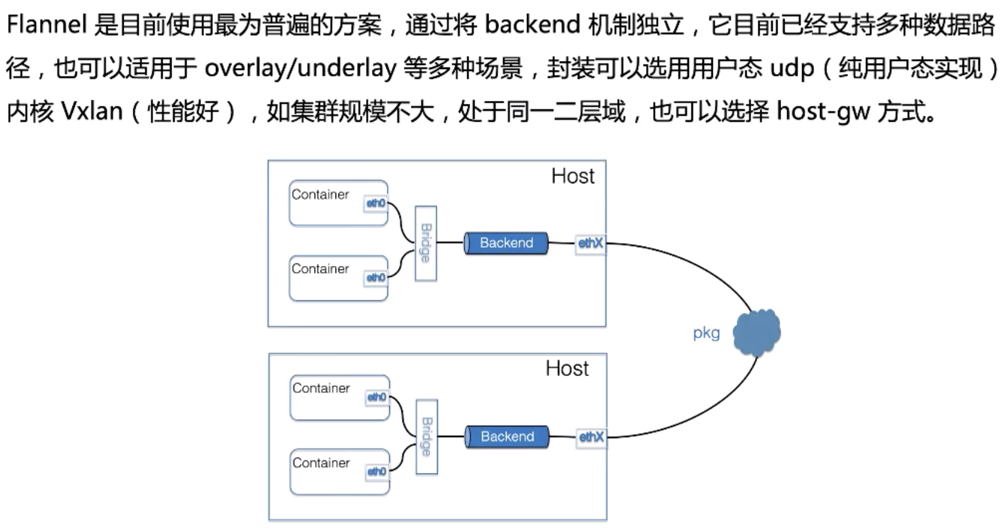
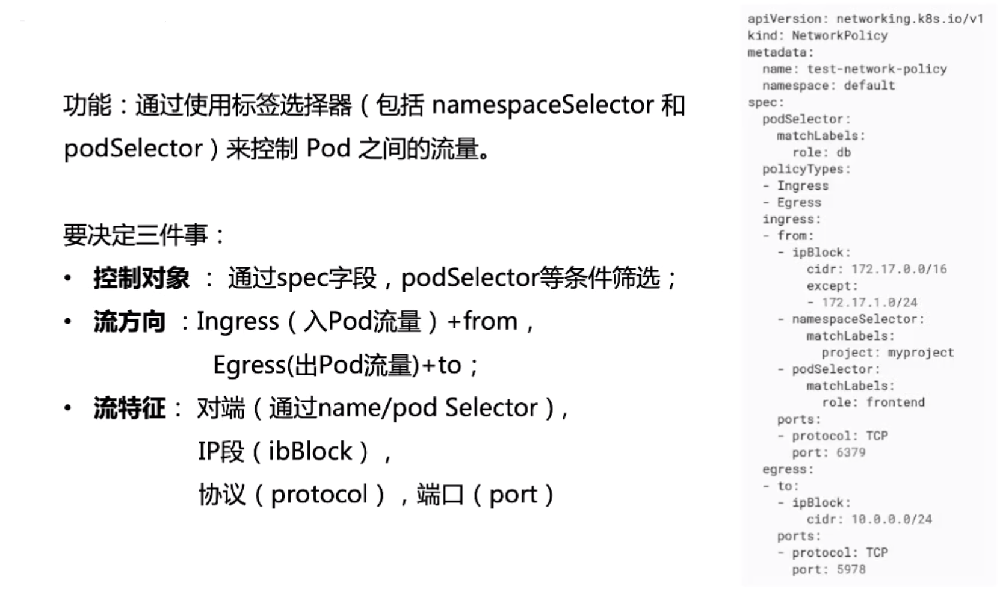

- 01 第一堂“云原生”课.md.html
- 02 容器基本概念.md.html
- 03 Kubernetes 核心概念.md.html
- 04 理解 Pod 和容器设计模式.md.html
- 05 应用编排与管理：核心原理.md.html
- 06 应用编排与管理.md.html
- 07 应用编排与管理：Job & DaemonSet.md.html
- 08 应用配置管理.md.html
- 09 应用存储和持久化数据卷：核心知识.md.html
- 10 应用存储和持久化数据卷：存储快照与拓扑调度(至天).md.html
- 11 可观测性：你的应用健康吗？（莫源）.md.html
- 12 可观测性-监控与日志（莫源）.md.html
- 13 Kubernetes 网络概念及策略控制（叶磊）.md.html
- 14 Kubernetes Service（溪恒）.md.html
- 15 从 0 开始创作云原生应用（殷达）.md.html
- 16 深入解析 Linux 容器（华敏）.md.html
13 Kubernetes 网络概念及策略控制（叶磊）
本文将主要分享以下 5 方面的内容：
- Kubernetes 基本网络模型；
- Netns 探秘；
- 主流网络方案简介；
- Network Policy 的用处；
- 思考时间。
Kubernetes 基本网络模型
本节来介绍一下 Kubernetes 对网络模型的一些想法。大家知道 Kubernetes 对于网络具体实现方案，没有什么限制，也没有给出特别好的参考案例。Kubernetes 对一个容器网络是否合格做出了限制，也就是 Kubernetes 的容器网络模型。可以把它归结为约法三章和四大目标。
- 约法三章的意思是：在评价一个容器网络或者设计容器网络的时候，它的准入条件。它需要满足哪三条？ 才能认为它是一个合格的网络方案。
- 四大目标意思是在设计这个网络的拓扑，设计网络的具体功能的实现的时候，要去想清楚，能不能达成连通性等这几大指标。
约法三章
先来看下约法三章：
- 第一条：任意两个 pod 之间其实是可以直接通信的，无需经过显式地使用 NAT 来接收数据和地址的转换；
- 第二条：node 与 pod 之间是可以直接通信的，无需使用明显的地址转换；
- 第三条：pod 看到自己的 IP 跟别人看见它所用的IP是一样的，中间不能经过转换。
后文中会讲一下我个人的理解，为什么 Kubernetes 对容器网络会有一些看起来武断的模型和要求。
四大目标
四大目标其实是在设计一个 K8s 的系统为外部世界提供服务的时候，从网络的角度要想清楚，外部世界如何一步一步连接到容器内部的应用？
- **外部世界和 service 之间是怎么通信的？**就是有一个互联网或者是公司外部的一个用户，怎么用到 service？service 特指 K8s 里面的服务概念。
- service 如何与它后端的 pod 通讯？
- pod 和 pod 之间调用是怎么做到通信的？
- 最后就是 pod 内部容器与容器之间的通信？
最终要达到目标，就是外部世界可以连接到最里面，对容器提供服务。
对基本约束的解释
对基本约束，可以做出这样一些解读：因为容器的网络发展复杂性就在于它其实是寄生在 Host 网络之上的。从这个角度讲，可以把容器网络方案大体分为 Underlay/Overlay 两大派别：
-
Underlay 的标准是它与 Host 网络是同层的，从外在可见的一个特征就是它是不是使用了 Host 网络同样的网段、输入输出基础设备、容器的 IP 地址是不是需要与 Host 网络取得协同（来自同一个中心分配或统一划分）。这就是 Underlay；
-
Overlay 不一样的地方就在于它并不需要从 Host 网络的 IPM 的管理的组件去申请IP，一般来说，它只需要跟 Host 网络不冲突，这个 IP 可以自由分配的。
为什么社区会提出 perPodperIP 这种简单武断的模型呢？我个人是觉得这样为后面的 service 管理一些服务的跟踪性能监控，带来了非常多的好处。因为一个 IP 一贯到底，对 case 或者各种不大的事情都会有很大的好处。
Netns 探秘
Netns 究竟实现了什么
下面简单讲一下，Network Namespace 里面能网络实现的内核基础。狭义上来说 runC 容器技术是不依赖于任何硬件的，它的执行基础就是它的内核里面，进程的内核代表就是 task，它如果不需要隔离，那么用的是主机的空间（ namespace），并不需要特别设置的空间隔离数据结构（ nsproxy-namespace proxy）。
相反，如果一个独立的网络 proxy，或者 mount proxy，里面就要填上真正的私有数据。它可以看到的数据结构如上图所示。
从感官上来看一个隔离的网络空间，它会拥有自己的网卡或者说是网络设备。网卡可能是虚拟的，也可能是物理网卡，它会拥有自己的 IP 地址、IP 表和路由表、拥有自己的协议栈状态。这里面特指就是 TCP/Ip协议栈，它会有自己的status，会有自己的 iptables、ipvs。
从整个感官上来讲，这就相当于拥有了一个完全独立的网络，它与主机网络是隔离的。当然协议栈的代码还是公用的，只是数据结构不相同。
Pod 与 Netns 的关系
这张图可以清晰表明 pod 里 Netns 的关系，每个 pod 都有着独立的网络空间，pod net container 会共享这个网络空间。一般 K8s 会推荐选用 Loopback 接口，在 pod net container 之间进行通信，而所有的 container 通过 pod 的 IP 对外提供服务。另外对于宿主机上的 Root Netns，可以把它看做一个特殊的网络空间，只不过它的 Pid 是1。
主流网络方案简介
典型的容器网络实现方案
接下来简单介绍一下典型的容器网络实现方案。容器网络方案可能是 K8s 里最为百花齐放的一个领域，它有着各种各样的实现。容器网络的复杂性，其实在于它需要跟底层 Iass 层的网络做协调、需要在性能跟 IP 分配的灵活性上做一些选择，这个方案是多种多样的。

下面简单介绍几个比较主要的方案：分别是 Flannel、Calico、Canal ，最后是 WeaveNet，中间的大多数方案都是采用了跟 Calico 类似的策略路由的方法。
- Flannel 是一个比较大一统的方案，它提供了多种的网络 backend。不同的 backend 实现了不同的拓扑，它可以覆盖多种场景；
- Calico 主要是采用了策略路由，节点之间采用 BGP 的协议，去进行路由的同步。它的特点是功能比较丰富，尤其是对 Network Point 支持比较好，大家都知道 Calico 对底层网络的要求，一般是需要 mac 地址能够直通，不能跨二层域；
- 当然也有一些社区的同学会把 Flannel 的优点和 Calico 的优点做一些集成。我们称之为嫁接型的创新项目 Cilium；
- 最后讲一下 WeaveNet，如果大家在使用中需要对数据做一些加密，可以选择用 WeaveNet，它的动态方案可以实现比较好的加密。
Flannel 方案

Flannel 方案是目前使用最为普遍的。如上图所示，可以看到一个典型的容器网方案。它首先要解决的是 container 的包如何到达 Host，这里采用的是加一个 Bridge 的方式。它的 backend 其实是独立的，也就是说这个包如何离开 Host，是采用哪种封装方式，还是不需要封装，都是可选择的。
现在来介绍三种主要的 backend：
- 一种是用户态的 udp，这种是最早期的实现；
- 然后是内核的 Vxlan，这两种都算是 overlay 的方案。Vxlan 的性能会比较好一点，但是它对内核的版本是有要求的，需要内核支持 Vxlan 的特性功能；
- 如果你的集群规模不够大，又处于同一个二层域，也可以选择采用 host-gw 的方式。这种方式的 backend 基本上是由一段广播路由规则来启动的，性能比较高。
Network Policy 的用处
Network Policy 基本概念
下面介绍一下 Network Policy 的概念。
刚才提到了 Kubernetes 网络的基本模型是需要 pod 之间全互联，这个将带来一些问题：可能在一个 K8s 集群里，有一些调用链之间是不会直接调用的。比如说两个部门之间，那么我希望 A 部门不要去探视到 B 部门的服务，这个时候就可以用到策略的概念。
基本上它的想法是这样的：它采用各种选择器（标签或 namespace），找到一组 pod，或者找到相当于通讯的两端，然后通过流的特征描述来决定它们之间是不是可以联通，可以理解为一个白名单的机制。
在使用 Network Policy 之前，如上图所示要注意 apiserver 需要打开一下这几个开关。另一个更重要的是我们选用的网络插件需要支持 Network Policy 的落地。大家要知道，Network Policy 只是 K8s 提供的一种对象，并没有内置组件做落地实施，需要取决于你选择的容器网络方案对这个标准的支持与否及完备程度，如果你选择 Flannel 之类，它并没有真正去落地这个 Policy，那么你试了这个也没有什么用。
配置实例

接下来讲一个配置的实例，或者说在设计一个 Network Policy 的时候要做哪些事情？我个人觉得需要决定三件事：
- 第一件事是控制对象，就像这个实例里面 spec 的部分。spec 里面通过 podSelector 或者 namespace 的 selector，可以选择做特定的一组 pod 来接受我们的控制；
- 第二个就是对流向考虑清楚，需要控制入方向还是出方向？还是两个方向都要控制？
- 最重要的就是第三部分，如果要对选择出来的方向加上控制对象来对它流进行描述，具体哪一些 stream 可以放进来，或者放出去？类比这个流特征的五元组，可以通过一些选择器来决定哪一些可以作为我的远端，这是对象的选择；也可以通过 IPBlock 这种机制来得到对哪些 IP 是可以放行的；最后就是哪些协议或哪些端口。其实流特征综合起来就是一个五元组，会把特定的能够接受的流选择出来 。
本节课总结
本节内容到这里就结束了，我们简单总结一下：
-
在 pod 的容器网络中核心概念就是 IP，IP 就是每个 pod 对外通讯的地址基础，必须内外一致，符合 K8s 的模型特征；
-
那么在介绍网络方案的时候，影响容器网络性能最关键的就是拓扑。要能够理解你的包端到端是怎么联通的，中间怎么从 container 到达 Host，Host 出了 container 是要封装还是解封装？还是通过策略路由？最终到达对端是怎么解出来的？
-
容器网络选择和设计选择。如果你并不清楚你的外部网络，或者你需要一个普适性最强的方案，假设说你对 mac 是否直连不太清楚、对外部路由器的路由表能否控制也不太清楚，那么你可以选择 Flannel 利用 Vxlan 作为 backend 的这种方案。如果你确信你的网络是 2 层可直连的，你可以进行选用 Calico 或者 Flannel-Hostgw 作为一个 backend；
-
最后就是对 Network Policy，在运维和使用的时候，它是一个很强大的工具，可以实现对进出流的精确控制。实现的方法我们也介绍了，要想清楚你要控制谁，然后你的流要怎么去定义。
思考时间
最后留一些思考，大家可以想一想：
- 为什么接口标准化 CNI 化了，但是容器网络却没有一个很标准的实现，内置在 K8s 里面？
- Network Policy 为什么没有一个标准的 controller 或者一个标准的实现，而是交给这个容器网络的 owner 来提供？
- 有没有可能完全不用网络设备来实现容器网络呢？考虑到现在有 RDMA 等有别于 TCP/IP 的这种方案。
- 在运维过程中网络问题比较多、也比较难排查，那么值不值得做一个开源工具，让它可以友好的展示从 container 到 Host 之间、Host 到 Host 之间，或者说封装及解封装之间，各个阶段的网络情况，有没有出现问题，能够快速的定位。据我所知应该现在是没有这样的工具的。
以上就是我对 K8s 容器网络的基本概念、以及 Network Policy 的一些介绍，谢谢大家的观看。